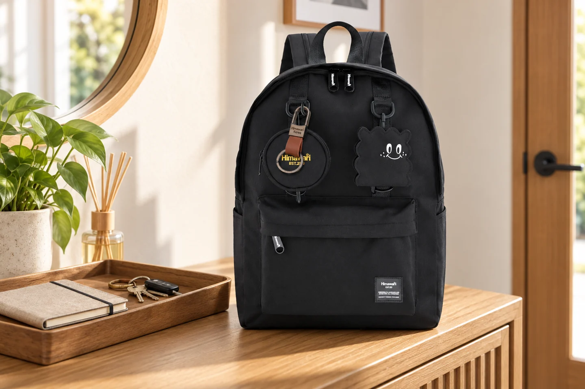

집에 돌아온 뒤 백팩을 두는 자리: 내일을 위한 3분 정리

집에 도착한 백팩은 하루 동안 가장 많은 물건이 모이는 자리입니다. 현관이나 의자 위에 그대로 두면 다음 날 필요한 것을 찾느라 다시 모든 지퍼를 열게 됩니다. 귀가 직후 짧은 순서를 정해 두면 가방을 비우는 일과 내일 준비가 자연스럽게 이어집니다.
먼저 꺼낼 것과 남길 것을 나누기
휴대전화 충전기, 도시락 용기, 영수증처럼 오늘만 필요한 물건부터 꺼냅니다. 내일도 사용할 물건은 별도 자리에 남겨 두고, 사용한 물건을 가방 안에서 다시 찾지 않도록 합니다.
젖은 물건은 가방 밖에서 말리기
물병이나 우산처럼 물기가 남은 물건은 바로 안쪽에 넣어 두지 않습니다. 표면을 닦고 충분히 마른 뒤 제품의 관리 안내에 맞춰 다시 넣으세요.
내일 첫 물건을 위쪽에 두기
아침에 가장 먼저 꺼낼 물건을 입구 가까이에 둡니다. 무거운 물건을 한쪽에 몰지 말고, 지퍼가 자연스럽게 닫히는지 확인한 뒤 가방을 바닥이 받쳐지는 자리로 옮겨 두세요.
자리 자체를 정해 두기
손잡이에 오래 매달기보다 선반이나 콘솔처럼 바닥이 안정적으로 받쳐지는 곳을 정합니다. 다른 물건에 눌리지 않고 어깨끈이 바닥에 끌리지 않는지 함께 확인하세요.
3분 정리 순서
첫 1분에는 음식물·물기·충전할 기기를 꺼냅니다. 두 번째 1분에는 지갑, 교통카드, 열쇠처럼 내일도 쓸 것을 한곳에 모읍니다. 마지막 1분에는 가방을 지퍼까지 닫고 바닥, 앞주머니, 끈 끝을 눈으로 확인합니다. 이 순서는 가방을 비우는 규칙이라기보다 다음 날 아침에 잊는 물건을 줄이기 위한 기준입니다.
주말에는 한 번 더 비우기
매일 쌓인 영수증, 포장지, 사용하지 않는 파우치가 남아 있으면 가방의 실제 여유 공간을 가늠하기 어렵습니다. 주말이나 쉬는 날에는 모든 칸을 열어 한 번 비우고, 각 물건이 정말 필요한지 다시 정해 보세요. 안감에 얼룩이나 냄새가 보이면 사용을 이어가기 전에 제품의 관리 방법을 확인하는 편이 좋습니다.
참고·안내
- Himawari No.0422 제품 정보
- 실제 Himawari No.0422 블랙 제품을 참조해 새로 생성한 AI 연출 이미지입니다.
자주 묻는 질문
매일 가방을 완전히 비워야 하나요?
그날 사용한 물건과 다음 날 필요한 물건을 나누어 확인하는 것이 핵심입니다. 모든 물건을 꺼내야 한다는 뜻은 아닙니다.
현관 바닥에 두어도 되나요?
바닥이 젖거나 오염되지 않았고 통행을 방해하지 않는다면 잠깐 둘 수 있습니다. 장기 보관은 바닥이 받쳐지는 선반이 더 적합합니다.